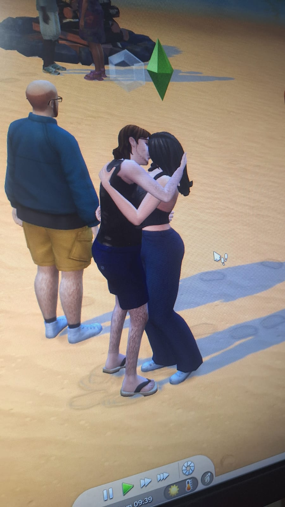

FELIZ DIA DOS NAMORADOS

UMA CARTA PARA AMANDA SILVA
Amor,
Passamos por tantas coisas, e ainda vamos passar por muito mais! Mesmo que venham momentos ruins ou bons, a sua companhia é o que mais importa. Tenho sentido constantemente um amor indescritível por você e pelo seu doce jeito de ser.
Os dias 11/01 e 12/06 estarão para sempre marcados na nossa história — pela nossa persistência, pelo nosso carinho e pelo que estamos construindo juntos. Agradeço por acreditar em mim e em toda a minha disposição em estar ao seu lado, todos os dias da minha vida. ❤️
Com amor, muito cuidado e carinho,
— Matheus Augusto (ou Polaroid)